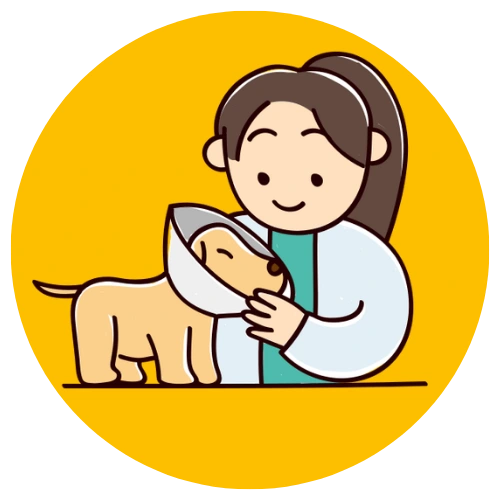
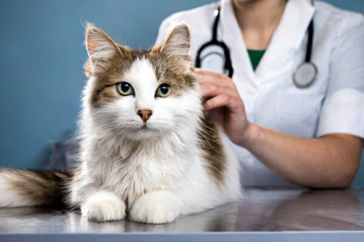

01
Consulta General
Atendemos a las mascotas que requieren una evaluación médica básica para cuidar y mantener su salud.
En Veterinaria Huellitas nos preocupamos por la salud y el bienestar de tus mascotas. Ofrecemos atención veterinaria con cariño, responsabilidad y compromiso, brindando un espacio seguro y confiable para tus fieles compañeros.

Brindamos servicios veterinarios pensados para proteger la salud y bienestar de tus mascotas.
Atendemos a las mascotas que requieren una evaluación médica básica para cuidar y mantener su salud.
Protegemos a tus mascotas mediante un adecuado control de vacunación.

Un acto de amor y responsabilidad que ayuda a mejorar la calidad de vida.

Atendemos a todas las mascotas que requieren una evaluación médica básica.
Nuestro servicio está dirigido a la población en general, brindando atención a las personas que buscan cuidar la salud y el bienestar de sus mascotas.
Para recibir atención veterinaria, se deberán cumplir los requisitos establecidos por Veterinaria Huellitas.
Protegemos a tus mascotas mediante un adecuado control de vacunación, ayudando a prevenir diferentes enfermedades y mantenerlas saludables.
Previene enfermedades graves y contagiosas.
Protege a tu mascota y a las personas que la rodean.
Requisito para viajes, adopciones y registros legales.
Mascotas con dueño responsable.

La esterilización es un acto de amor y responsabilidad. Ayuda a controlar la sobrepoblación y mejorar su calidad de vida.
Previene camadas no deseadas.
Reduce el abandono de animales.
Disminuye el riesgo de ciertos tipos de cáncer.
Disminuye comportamientos agresivos.
Mejora la salud general y longevidad.
Para garantizar la seguridad de la mascota, se deberán cumplir las siguientes condiciones.
Edad mínima: 4 a 6 meses.
Se solicitarán exámenes de rutina, previa a revisión médica.
Ayuno de 8 a 12 horas antes de la cirugía.
Presentar con correa, jaula o transportador.
Documento de identidad del responsable.
Sigue estas recomendaciones para favorecer una recuperación tranquila y segura.
La mascota será evaluada por el personal veterinario para determinar si se encuentra en condiciones adecuadas para el procedimiento.
El responsable recibirá las indicaciones necesarias sobre alimentación, ayuno y cuidados previos.
Cada mascota es diferente. La edad, estado de salud y condiciones del animal deben ser evaluados por un profesional veterinario antes de realizar cualquier procedimiento.
Organiza tu visita y acércate con tu mascota. Nuestro equipo estará listo para atenderte.
8:00 AM - 12:00 PM
2:00 PM - 5:30 PM
8:00 AM - 1:00 PM
Recomendamos consultar previamente la disponibilidad para procedimientos.
Completa el formulario y solicita una cita en Veterinaria Huellitas.
Atención para perros y gatos.
Cuidado responsable y comprometido.

En Veterinaria Huellitas nos preocupamos por brindar un espacio seguro y confiable para los fieles compañeros de nuestras familias.
Trabajamos con cariño, responsabilidad y compromiso para promover el bienestar animal y la tenencia responsable de mascotas.
Si tienes dudas sobre nuestros servicios, horarios o procedimientos, puedes comunicarte con nosotros.